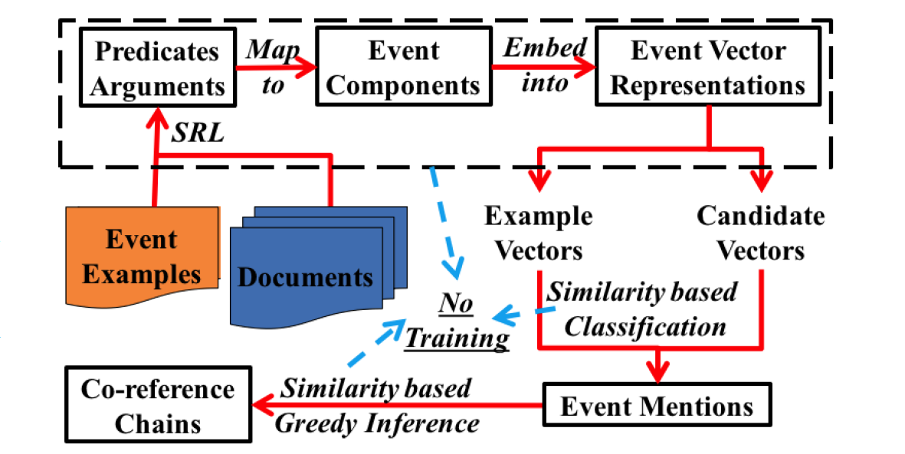

Event detection and co-reference with minimal supervision [1]
摘要：该论文使用了一种弱监督的算法解决了事件检测与共指问题。事件共指问题可以看作是一种事件之间的相似度计算问题，而在该文中，事件检测问题也被看作是一种相似度检测问题。对于ACE或rich ERE划分的所有事件类型，使用每个类型中的几个实例作为该类型事件的向量，然后计算新事件向量与每个类型事件向量之间的相似度，根据这一相似度对事件进行判断。该文的另一个特点在于事件特征的选择，在将事件表示为向量的过程中，使用了Freebase作为特征来对事件进行表示。
1. Introduction

上图是论文提出的MSEP（Minimally Supervised Event Pipeline）框架。这里 Event examples 是唯一的监督来源，用于产生 Example vectors。在MSEP框架中不需要训练。
这篇论文主要是针对两个问题：
- Event detection 指的是对一段文本内容，检测是否存在符合要求的事件。
- Co-reference problem. 为了更好的理解和利用事件的信息，我们需要从文本中提取出时间、地点、人物、行为等信息。此外，我们还需要了解两个事件的关系，例如，判断两个事件是否表示同一个事件，这就是Co-reference problem。
在本文中，我们提出了一种更加可行且更加可测的方法来描述事件。对于一个事件e，event detection 所要做的就是判断是否存在一个事件集合，事件e在语义上是否有关联，以至于可以被划分到该集合内；而 co-reference problem 则是判断两个事件e1、e2是否在语义上表述足够接近，以至于我们认为它们所表示的实际上是同一个事件。可以看到两个任务实际上都需要判断相似性，我们可以把它们转化为语义相似性问题。
现在主要问题有：1. 如何表示一个事件；2. 如何表达相似性。前者我们采用了semantic role labeling representation（SRL），来结构化地描述一个事件；对于后者，我们将对事件做一个embedding，通过计算其余弦距离来表达相似性。
我们提出了一个通用事件检测和指代消解框架，它基本上不需要标记数据。在实践中，为了将一个事件提法（event mention）和一个事件本体（event ontology）相联系起来，我们只需要一些事件示例。这种定义类型的方式是非常合理的，因为给出例子是定义事件类型的最简单的方法。我们的方法比标准的无监督方法要求更少假设，在我们的模型中，给定事件类型的定义（以事件例子的形式），我们可以将单个事件分类到已知本体，并确定两个事件是否是 co-reference 的。
2. The MSEP System
2.1 Structured Vector Representation
事件结构和句子结构之间有一个平行关系。我们发现一般来说，事件的触发词往往是谓语，所以可以针对谓语对其做一些改进：
Basic event vector representation。基本事件向量由它的各个组成部分组成。
Augmented event vector representation。在这里，“+” 表示我们首先将文本片段放在一起，然后将组合的文本片段转换成ESA向量。
2.2 Event Mention Detection
我们定义 Event type representation 为该类别下的事件向量的平均值。
我们定义定义相似度如下
其中 e1 是待处理事件，e2 是事件的类别。a 就是事件里的各个组件。若遇到 a 缺失的情况（如地点、时间等），我们用非缺失的部分的平均值来代替它。具体的操作方法参见原文。
2.3 Event co-reference
这里如上一节的内容所说，通过余弦距离$S(e_1, e_2)$来计算两个事件的相似度。
对于每一个事件，我们分别比较$agnet{sub}, agnet{obj}$，若都不相同，我们认为它们是独立的；如果有缺失，我们认为它和任意值匹配。这样，我们可以得到一个不重复的事件集合，$Set_{conflict}$。
接下来遍历所有事件，对于事件k+1，
如果$S(ep, e{k+1})$的值大于我们设定的阈值，我们就认为它是同一个事件；否则，我们把他分为一个新的类。
3. Vector Representation
我们可以看到，其实文章之前的内容都不依赖于 embedding 的具体选择，事实上，作者也测试了很多的方法，可以根据实际情况来选择。
- Explicit Semantic Analysis
- Brown Cluster
- Word2Vec
- Dependency-Based Embedding
4. Semantic Role Labeling
上面工作建立在已经完成了 Semantic Role Labeling 的情况下，这里我们在讨论一下如何进行 Semantic Role Labeling。
对于标注任务来说大同小异，现在往往使用神经网络模型来进行标注，例如[2]，缺点是需要大量标注数据。目前业内比较主流的解决方案是RNN-CRF模型，一般来说分为：
- Embedding layer
- Bi-directional RNN (usually LSTM) layer
- Tanh hidden layer
- CRF layer
在实际应用上，可能还会增加Attention机制等来进一步提高它的效果。
目前已有的系统如哈工大的语言技术平台LTP，能够用于 Semantic Role Labeling 等。
5. Conclusion
这一篇文章提出了一种新颖的事件检测和指代消解方法。其最重要的部分就是提出了一种结构化的向量，能够更好地表示event，用以进行事件分类、指代消解等工作。这个方法在一些关键指标上甚至能优于最新的监督方法，并且能够更好地适应新的领域。
Bibliography
[1] Peng, H., Song, Y., & Roth, D. (2016). Event Detection and Co-reference with Minimal Supervision. In EMNLP (pp. 392-402).
[2] Zhou, J., & Xu, W. (2015). End-to-end learning of semantic role labeling using recurrent neural networks. In ACL (1) (pp. 1127-1137).